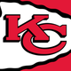
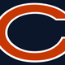
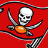
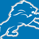
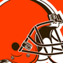
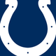
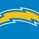
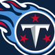
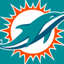
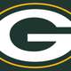

The bracket below is the "favorites win" path: each of the 108 regular-season games left goes to the side your NFL model favors, then the NFL's seeding rules set the 14-team field. The tables give the odds when every game is left to chance. Rebuilt every time the NFL Team Grades refresh.

Chiefs42%
Bears67%
Buccaneers37%
Lions63%Percentages are each team's chance to win that game, from the model's grade gap plus the home team's home edge (the Super Bowl is neutral), turned into a win chance the way the NFL board does moneylines (results spread about 11.1 points). Highlighted teams are the favorites. Under each game: the model's projected spread and total (totals from your over/under model's scoring ratings, with no weather, QB or injury terms; January weather isn't in them). The top seed has a bye; after the wild-card round the top seed left hosts the lowest seed left.
| Conf. | Seed | Team | Grade | Divisional | Conf. title game | Super Bowl | Champion |
|---|---|---|---|---|---|---|---|
| AFC | 1 | Bills | 56.8 | bye | 65.0% | 39.9% | 21.1% |
| AFC | 2 | Broncos | 53.7 | 74.2% | 36.7% | 14.7% | 6.3% |
| AFC | 3 | Bengals | 55.9 | 55.0% | 28.0% | 13.0% | 6.5% |
| AFC | 4 | Jaguars | 56.3 | 58.2% | 27.9% | 13.7% | 7.0% |
| AFC | 5 | Chiefs | 56.0 | 41.8% | 19.5% | 9.3% | 4.7% |
| AFC | 6 | Texans | 55.7 | 45.0% | 18.0% | 8.3% | 4.1% |
| AFC | 7 | Steelers | 48.7 | 25.8% | 4.9% | 1.0% | 0.3% |
| NFC | 1 | 49ers | 57.8 | bye | 61.2% | 44.1% | 25.0% |
| NFC | 2 | Vikings | 52.7 | 39.2% | 24.4% | 8.7% | 3.3% |
| NFC | 3 | Giants | 48.0 | 32.8% | 11.3% | 2.2% | 0.5% |
| NFC | 4 | Buccaneers | 49.2 | 36.7% | 13.1% | 3.0% | 0.8% |
| NFC | 5 | Lions | 54.3 | 63.3% | 34.1% | 13.7% | 6.0% |
| NFC | 6 | Bears | 54.2 | 67.2% | 29.3% | 12.2% | 5.4% |
| NFC | 7 | Seahawks | 57.5 | 60.8% | 26.6% | 16.1% | 8.9% |
200,000 runs of the projected bracket above.
| Team | Record | Proj. W | Grade | Win div. | Make playoffs | No. 1 seed | Divisional | Conf. game | Super Bowl | Champion |
|---|---|---|---|---|---|---|---|---|---|---|
| Bills | 9-1 | 13.9 | 56.8 | >99% | >99.9% | 53% | 87.7% | 54.7% | 31.6% | 16.7% |
| Chiefs | 8-2 | 12.4 | 56.0 | 40% | 99.8% | 13% | 60.2% | 31.2% | 15.4% | 7.8% |
| Broncos | 8-2 | 13.0 | 53.7 | 60% | 99.7% | 26% | 64.3% | 30.3% | 13.5% | 5.9% |
| Bengals | 7-3 | 12.1 | 55.9 | 88% | 99.1% | 5% | 65.7% | 32.4% | 15.6% | 7.7% |
| Jaguars | 7-3 | 11.8 | 56.3 | 92% | 99.0% | 3% | 68.4% | 35.7% | 18.0% | 9.2% |
 Browns | 6-4 | 9.4 | 47.4 | 8% | 63.6% | <1% | 13.0% | 2.3% | 0.4% | 0.1% |
| Steelers | 6-4 | 9.2 | 48.7 | 4% | 54.0% | <1% | 11.9% | 2.6% | 0.6% | 0.2% |
| Texans | 4-6 | 8.9 | 55.7 | 8% | 50.5% | 0% | 23.1% | 10.0% | 4.7% | 2.3% |
| Patriots | 5-5 | 7.9 | 47.3 | <1% | 29.0% | <1% | 5.0% | 0.8% | 0.2% | <0.1% |
| Ravens | 4-7 | 6.4 | 48.1 | <1% | 2.8% | 0% | 0.5% | 0.1% | <0.1% | <0.1% |
| Raiders | 4-7 | 6.3 | 43.6 | 0% | 2.1% | 0% | 0.2% | <0.1% | <0.1% | 0.0% |
| Jets | 3-8 | 5.5 | 45.6 | 0% | 0.3% | 0% | <0.1% | <0.1% | 0.0% | 0.0% |
 Colts | 3-8 | 5.2 | 44.9 | 0% | <0.1% | 0% | <0.1% | 0.0% | 0.0% | 0.0% |
 Chargers | 1-9 | 3.2 | 45.0 | 0% | 0.0% | 0% | 0.0% | 0.0% | 0.0% | 0.0% |
 Titans | 1-9 | 2.9 | 43.2 | 0% | 0.0% | 0% | 0.0% | 0.0% | 0.0% | 0.0% |
 Dolphins | 1-9 | 2.6 | 41.0 | 0% | 0.0% | 0% | 0.0% | 0.0% | 0.0% | 0.0% |
| Team | Record | Proj. W | Grade | Win div. | Make playoffs | No. 1 seed | Divisional | Conf. game | Super Bowl | Champion |
|---|---|---|---|---|---|---|---|---|---|---|
| 49ers | 9-1 | 14.1 | 57.8 | 95% | 99.9% | 72% | 90.6% | 59.8% | 40.0% | 22.8% |
| Lions | 8-2 | 12.4 | 54.3 | 50% | 93.6% | 16% | 59.8% | 31.2% | 13.8% | 6.1% |
| Bears | 8-2 | 11.8 | 54.2 | 26% | 88.3% | 8% | 53.6% | 26.2% | 11.1% | 4.7% |
| Vikings | 7-3 | 11.4 | 52.7 | 24% | 87.2% | 2% | 45.2% | 19.3% | 6.8% | 2.7% |
| Panthers | 5-5 | 8.1 | 49.1 | 62% | 62.4% | 0% | 22.3% | 6.9% | 1.7% | 0.5% |
| Seahawks | 6-4 | 10.7 | 57.5 | 4% | 60.7% | <1% | 39.4% | 20.8% | 11.6% | 6.6% |
| Giants | 6-3-1 | 9.2 | 48.0 | 54% | 54.7% | <1% | 16.6% | 4.6% | 1.0% | 0.2% |
| Rams | 7-4 | 10.4 | 57.0 | 2% | 53.9% | <1% | 35.1% | 18.3% | 9.8% | 5.3% |
| Buccaneers | 3-7 | 6.8 | 49.2 | 28% | 27.7% | 0% | 9.7% | 3.0% | 0.8% | 0.2% |
| Commanders | 4-5-1 | 8.1 | 50.2 | 27% | 26.9% | 0% | 10.0% | 3.8% | 1.1% | 0.4% |
| Cowboys | 5-6 | 8.0 | 52.1 | 20% | 20.1% | 0% | 9.2% | 3.9% | 1.4% | 0.5% |
 Packers | 6-5 | 9.1 | 51.8 | <1% | 14.4% | 0% | 6.0% | 1.8% | 0.7% | 0.2% |
| Saints | 3-7 | 6.1 | 47.3 | 7% | 6.9% | 0% | 1.8% | 0.4% | 0.1% | <0.1% |
| Falcons | 3-7 | 5.3 | 45.1 | 3% | 3.2% | 0% | 0.7% | 0.1% | <0.1% | <0.1% |
| Eagles | 3-7 | 5.1 | 44.0 | <1% | 0.2% | 0% | <0.1% | <0.1% | <0.1% | 0.0% |
| Cardinals | 3-8 | 4.7 | 40.1 | 0% | 0.0% | 0% | 0.0% | 0.0% | 0.0% | 0.0% |
20,000 runs of the rest of the regular season, the tiebreakers and the playoffs. "Divisional" counts the top seed's bye as reaching it. Proj. W = average final wins.
| AFC East | Now | Proj. W | Win div. |
|---|---|---|---|
| Bills | 9-1 | 13.9 | >99% |
| Patriots | 5-5 | 7.9 | <1% |
| Jets | 3-8 | 5.5 | 0% |
| Dolphins | 1-9 | 2.6 | 0% |
| AFC North | Now | Proj. W | Win div. |
|---|---|---|---|
| Bengals | 7-3 | 12.1 | 88% |
| Browns | 6-4 | 9.4 | 8% |
| Steelers | 6-4 | 9.2 | 4% |
| Ravens | 4-7 | 6.4 | <1% |
| AFC South | Now | Proj. W | Win div. |
|---|---|---|---|
| Jaguars | 7-3 | 11.8 | 92% |
| Texans | 4-6 | 8.9 | 8% |
| Colts | 3-8 | 5.2 | 0% |
| Titans | 1-9 | 2.9 | 0% |
| AFC West | Now | Proj. W | Win div. |
|---|---|---|---|
| Broncos | 8-2 | 13.0 | 60% |
| Chiefs | 8-2 | 12.4 | 40% |
| Raiders | 4-7 | 6.3 | 0% |
| Chargers | 1-9 | 3.2 | 0% |
| NFC East | Now | Proj. W | Win div. |
|---|---|---|---|
| Giants | 6-3-1 | 9.2 | 54% |
| Commanders | 4-5-1 | 8.1 | 27% |
| Cowboys | 5-6 | 8.0 | 20% |
| Eagles | 3-7 | 5.1 | <1% |
| NFC North | Now | Proj. W | Win div. |
|---|---|---|---|
| Lions | 8-2 | 12.4 | 50% |
| Bears | 8-2 | 11.8 | 26% |
| Vikings | 7-3 | 11.4 | 24% |
| Packers | 6-5 | 9.1 | <1% |
| NFC South | Now | Proj. W | Win div. |
|---|---|---|---|
| Panthers | 5-5 | 8.1 | 62% |
| Buccaneers | 3-7 | 6.8 | 28% |
| Saints | 3-7 | 6.1 | 7% |
| Falcons | 3-7 | 5.3 | 3% |
| NFC West | Now | Proj. W | Win div. |
|---|---|---|---|
| 49ers | 9-1 | 14.1 | 95% |
| Seahawks | 6-4 | 10.7 | 4% |
| Rams | 7-4 | 10.4 | 2% |
| Cardinals | 3-8 | 4.7 | 0% |
| Day | Game | Pick | Chance | Spread | Total |
|---|---|---|---|---|---|
| Thu Nov 26 | CHI at DET | Lions | 56% | DET −1.5 | 51 |
| Thu Nov 26 | PHI at DAL | Cowboys | 81% | DAL −9.5 | 48.5 |
| Thu Nov 26 | KC at BUF | Bills | 57% | BUF −2 | 45.5 |
| Fri Nov 27 | DEN at PIT | Broncos | 63% | DEN −3.5 | 40.5 |
| Sun Nov 29 | NO at CIN | Bengals | 81% | CIN −10 | 51 |
| Sun Nov 29 | BAL at HOU | Texans | 81% | HOU −10 | 48.5 |
| Sun Nov 29 | NYG at IND | Giants | 54% | NYG −1 | 47.5 |
| Sun Nov 29 | TEN at JAX | Jaguars | 90% | JAX −14.5 | 47.5 |
| Sun Nov 29 | NYJ at MIA | Jets | 62% | NYJ −3.5 | 42.5 |
| Sun Nov 29 | ATL at MIN | Vikings | 74% | MIN −7.5 | 46.5 |
| Sun Nov 29 | NE at LAC | Patriots | 58% | NE −2 | 39 |
| Sun Nov 29 | WAS at ARI | Commanders | 77% | WAS −8 | 47 |
| Sun Nov 29 | SEA at SF | 49ers | 51% | Pick | 47.5 |
| Sun Nov 29 | LV at CLE | Browns | 72% | CLE −6.5 | 43.5 |
| Mon Nov 30 | CAR at TB | Buccaneers | 54% | TB −1 | 46 |
| Wk | Game | Home wins | Spread | Total | Playoff odds swing |
|---|---|---|---|---|---|
| 15 | CLE at NYG | 56% | NYG −2 | 41.5 | Giants 28 pts; Browns 23 pts |
| 13 | HOU at PIT | 33% | HOU −5 | 43.5 | Texans 48 pts; Steelers 41 pts |
| 14 | NYG at SEA | 83% | SEA −10.5 | 43 | Giants 26 pts; Seahawks 22 pts |
| 12 | CAR at TB | 54% | TB −1 | 46 | Panthers 43 pts; Buccaneers 38 pts |
| 14 | HOU at WAS | 36% | HOU −4 | 46 | Texans 23 pts; Commanders 22 pts |
| 15 | DAL at LA | 71% | LA −6 | 53.5 | Rams 23 pts; Cowboys 21 pts |
| 16 | CAR at PIT | 56% | PIT −1.5 | 45.5 | Steelers 24 pts; Panthers 19 pts |
| 16 | LA at SEA | 56% | SEA −1.5 | 43.5 | Seahawks 40 pts; Rams 39 pts |
| 13 | DAL at SEA | 72% | SEA −6.5 | 51 | Seahawks 24 pts; Cowboys 20 pts |
| 17 | SEA at CAR | 27% | SEA −7 | 45 | Seahawks 23 pts; Panthers 18 pts |
| 18 | SEA at LA | 53% | LA −0.5 | 43.5 | Seahawks 38 pts; Rams 38 pts |
| 17 | LA at TB | 28% | LA −6.5 | 45 | Rams 24 pts; Buccaneers 17 pts |
How much a team's chance to make the playoffs moves between a home win and an away win, in percentage points. Games are ranked by the total swing across the league.
Remaining games: every game left on the nflverse schedule. This week's games use the weekly model's own number (grade gap plus rest, byes, travel and divisional context); later weeks use the grade gap plus the home team's home edge from the Home field tab, nothing at neutral sites. Grades carry this week's injury list, so later weeks assume today's injuries; ties aren't simulated. Seeding: four division winners are seeds 1–4 by record, then the three best other teams. Division ties: head-to-head, division record, common games, conference record, strength of victory, strength of schedule. Wild-card ties: the best team from each division stays in first, then head-to-head (a sweep when three or more are tied), conference record, common games (four or more), strength of victory, strength of schedule. The points-based steps after that aren't modeled, so a coin flip decides the rare tie that gets that far. Your NFL model has missed by slightly more than the closing lines in its 2016–2026 backtest, so read these as the model's view, not betting odds.